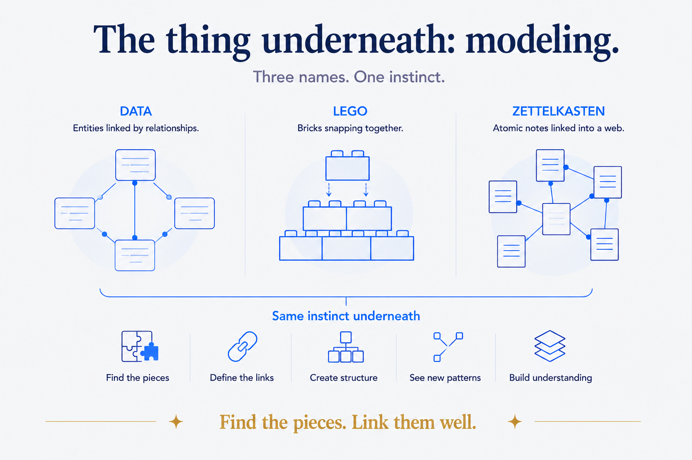
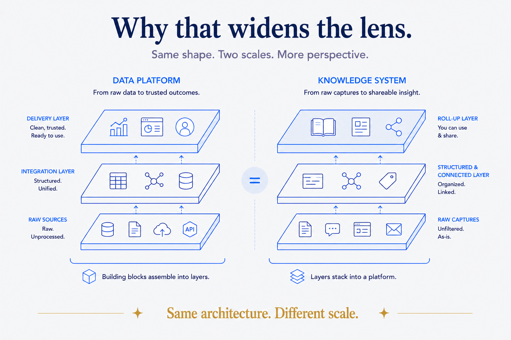
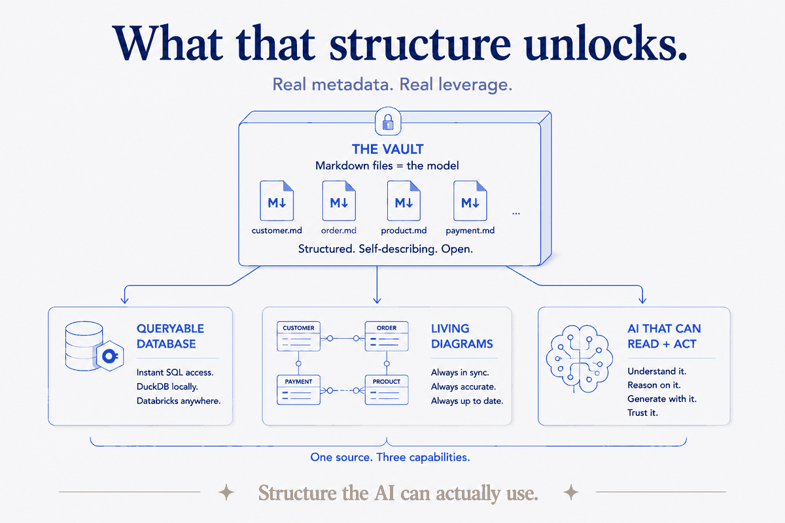
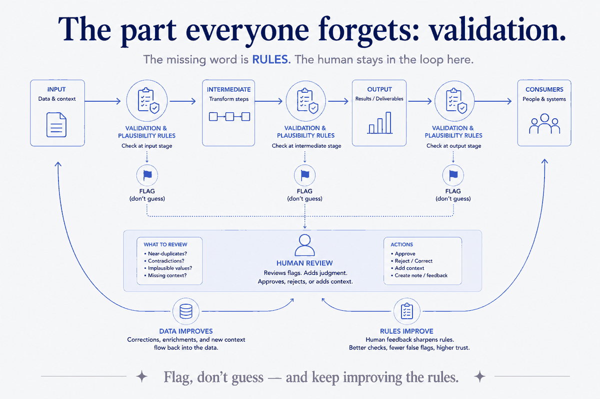

The skill under all of it
My core skill was never building pipelines. It's data modeling — and I mean that in the widest sense. Taking something tangled and giving it a shape. Finding the essence in a mess of detail. Drawing the diagram that finally makes a complex system clear — to engineers, yes, but also to the business, the stakeholders, the people who have to trust it without reading a line of code.
At its heart, modeling is simple to state and hard to do well: you find the real building blocks — the entities, the things that matter — and you assemble, structure, and link them into something whole. It's a bit like Lego. You identify the pieces, see how they snap together, and build something that holds — and when the need changes, you take it apart and rebuild without starting from nothing.
The claim of this piece is that your personal knowledge can be modeled the exact same way. And once it is, it stops being a pile of notes and becomes something you — and an AI — can actually use.
The building blocks: atomic, self-describing, open
Start with the pieces, because everything rests on them. Three properties make a building block worth anything.
Atomicity. Each block is the smallest unit that still means something on its own — small enough to be stable, reusable, and recombined a hundred ways without breaking. In a data model that's an entity. In a knowledge system it's a single note, one idea per file.
Self-describing. This is the one people underrate. A good block carries its own meaning with it — what it is, where it came from, what it's allowed to do — so it can be understood and trusted without a manual or a person who "just knows." An atomic, self-describing block is a piece you can hand to anyone, or to an AI, and it explains itself.
Open — and therefore tool-agnostic. The model those blocks form isn't a separate technical artifact locked inside a proprietary modeling tool. It's plain, readable, versionable, close to the thing it describes — not trapped in a vendor's file format that only one application can open. Because it's open, it's tool-agnostic — across every category of tool. It doesn't belong to a particular modeling tool, a particular metadata tool or catalog, or a particular AI. Use Claude today and a different model tomorrow; load the metadata into DuckDB now and Databricks later; open the files in any editor. The model outlives all of them, because it never lived inside any of them. You swap tools freely and keep the model whole. An open model is one everyone can read, review, and build on, people and AI alike. A proprietary one is a black box you rent access to — and when the vendor changes, your model is hostage.
Hold those three in mind, because a personal vault can have all of them.

Decompose, then reassemble
Here's the move at the heart of good modeling, and it's worth making explicit because it's where the craft actually lives.
Data comes in whole and messy. You decompose it into its smallest honest parts — the entities, the atomic facts, the building blocks (this is the instinct behind ensemble modeling: break things down to the pieces that don't change). Then you transform, clean, and validate those pieces. And then you reassemble them into a coherent business model — a picture of how the organization actually thinks about itself, shaped by its current understanding, not by whatever shape the source systems happened to arrive in.
The crucial part is what happens on top. That business model is deliberately kept separate from the delivery models — the specific views each consumer needs. Marketing, sales, HR, finance, risk: each is a view built on the same underlying model, tailored to how that team asks its questions. You keep them separate on purpose, because the delivery layer is volatile — what marketing wants this quarter isn't what it wanted last year — while the business model underneath stays comparatively stable. Separate the stable core from the changing surface, and you can keep reshaping the surface without rebuilding the foundation every time.
That principle — a stable, well-modeled core with volatile views layered on top — is exactly what I mean by structure. It's what makes a data platform survive a reorg, and it's what makes a personal knowledge system survive a change of tools or goals.

The vault is the data model
Now bring it home. In my own system, the building blocks are simply markdown files — plain text, one idea per file. At the top of each sits a small block of YAML frontmatter, and that's what carries the structure: the type of thing this note is, its properties, its relationships, its status — the schema of the block, written right into the block. It's the metadata layer, the same role a schema plays in a data model, except it travels with the file instead of living in a separate catalog.
And that metadata organizes itself the way data modeling always has — in conceptual, logical, and technical layers, each pitched at its own audience. The conceptual layer is the plain-language what — the business's view. The logical layer is the how it fits together — the architect's and analyst's view. The technical layer is the how it's implemented — the engineer's view. One model, read at three altitudes, so every stakeholder meets it where they stand.
The notes link to each other into a web — a Zettelkasten, if you know the term: atomic pieces you connect until the links themselves become the thinking. Entities linked by relationships; notes linked into a graph. Different words, one instinct.
So here's the line I keep coming back to: the vault is the data model. A folder of atomic, self-describing, linked markdown files — structured deliberately in three layers — isn't a place where I keep a model of my knowledge. It is the model. Open, owned, readable by anyone, exactly like a data model should be.

What that structure unlocks
Because the structure is real, machine-readable metadata, it doesn't just sit there. It does things.
You can mould the whole vault into a database. Pour the frontmatter across thousands of files into DuckDB, or Databricks, or whatever engine you like, and suddenly you can query your knowledge the way you'd query a warehouse. The files stay the source of truth; the database is a view you build from them and rebuild any time.
You can generate diagrams on top of it — maps of how everything connects, drawn straight from the metadata rather than by hand. Because they're derived, they're always up to date: change the underlying files, regenerate, and the picture is current. No stale diagram gathering dust in a folder. That closes the circle back to the part of modeling I love most: making a complex structure visible and clear for everyone, automatically.
You can offer the structure to an AI. An open, atomic, self-describing, queryable model — metadata and links intact — is exactly what an AI can read and reason over. Give it a genuine structure and it stops guessing and starts working from your knowledge. The magic was never the model on the vendor's side; it's the structure you hand it.

The part everyone forgets: validation
There's one more layer, and it's the one that separates a real system from a hopeful pile: you have to consistently validate and run plausibility checks — and in the AI era, this stops being optional.
A model isn't trustworthy because you built it carefully once. It's trustworthy because rules keep checking it against what's known — at every stage. Not just the data coming in, but the intermediate results, and above all the output. Validation and plausibility rules test each of them against context — does this date fall in a possible range? does this link point somewhere real? does this number contradict something we already hold true? — and on a mismatch, the system flags rather than guesses.

This is why a real data-quality framework matters more now, not less. AI produces volume — it drafts, extracts, infers, fills in — and volume without checks is just more places to be quietly wrong. So you validate all of it: every generated field, every enriched value, every inference the model made. The DQ framework is what makes AI output safe to keep.
And here's the part I care about most: improving the rules based on the output is how the human stays in the loop. You don't review everything — you review what the checks flag, and the surprising things that slip through. Human eyes on the output are where judgment lives. When something's wrong that the rules missed, you don't just fix the value; you add or sharpen a rule so it's caught next time. A double loop: the data gets better, and the rules that guard it get better — tuned by a human looking at real results. That's not a human rubber-stamping AI; it's a human steering it, at the one point where steering counts.
This is the missing word in every "data + AI" pitch. Everyone says data and AI; almost no one says rules. But rules — validation, plausibility, the discipline of flagging instead of guessing, and the loop that keeps improving them — are what keep a model honest as it grows and as the AI writes into it. It's the Data Quality Index I ran for banks, pointed now at my own knowledge. Structure without validation drifts; structure with validation compounds.
It was always metadata
Strip the whole thing to the studs and it's the same craft it has always been: metadata. The frontmatter, the entities, the three layers, the diagrams, the views each team gets, the rules that validate it — all of it is metadata. Data about the data. The structure that says what the pieces are, how they fit, and how to trust them.
That's what I've worked with my entire career, and it's the through-line that never changed. The tools came and went; the discipline was always metadata. What's new is only that AI finally made everyone else care about it too — because a model an AI can read and act on is worth more today than it has ever been.
And it's business-friendly, which for me is the whole point. An open, self-describing model with living diagrams and validation isn't only machine-readable; it's human-readable. The business can see it, question it, trust it — no proprietary tool, no priesthood of engineers required to translate. Bringing structure that everyone understands — the business, the stakeholders, the AI, and the engineers alike — is what I've always meant by data modeling.
Enterprise data or your own knowledge in a folder of files: same skill, two sizes. The vault is the data model. And a good model, kept open and kept honest, is the most useful thing you can hand to an AI — or to yourself.